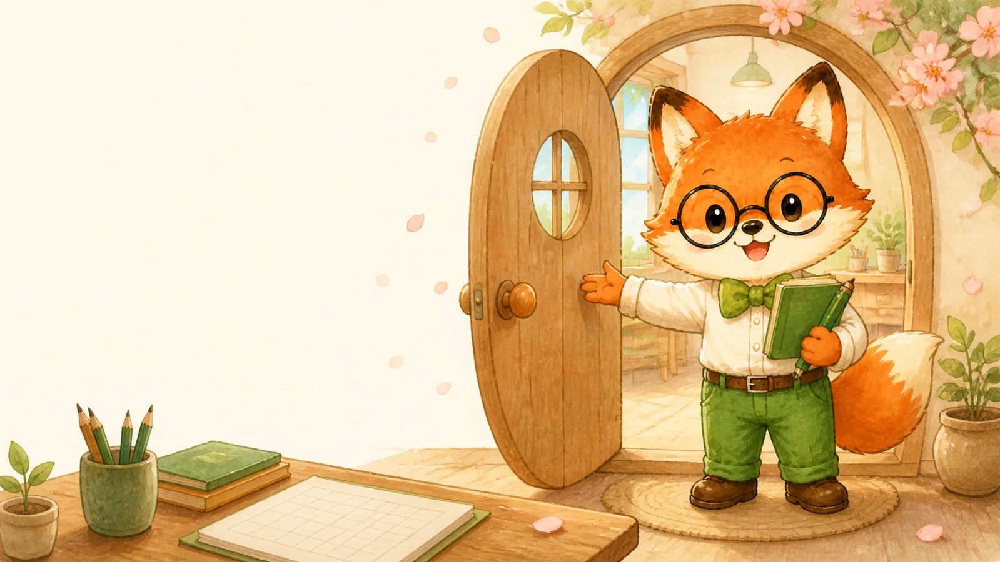
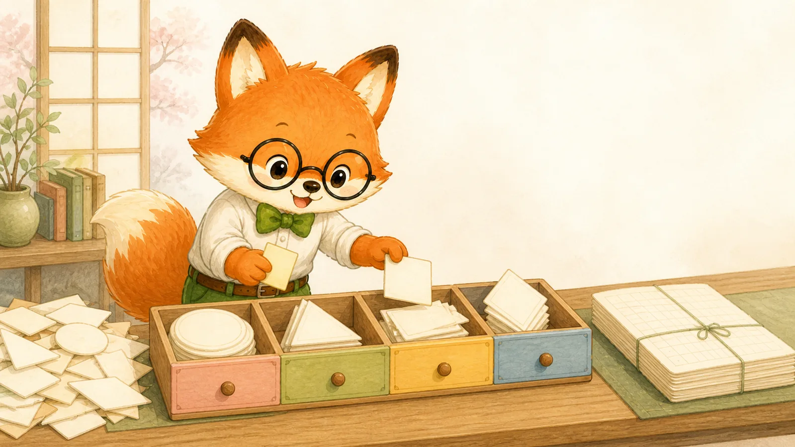
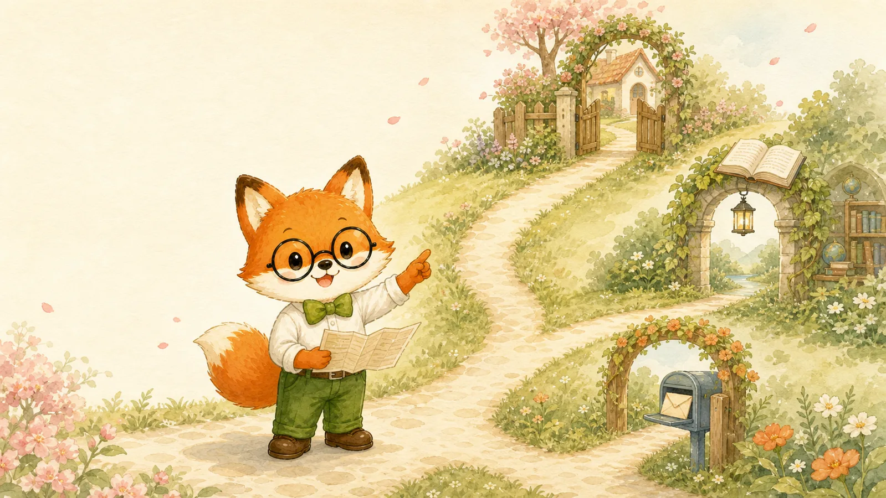
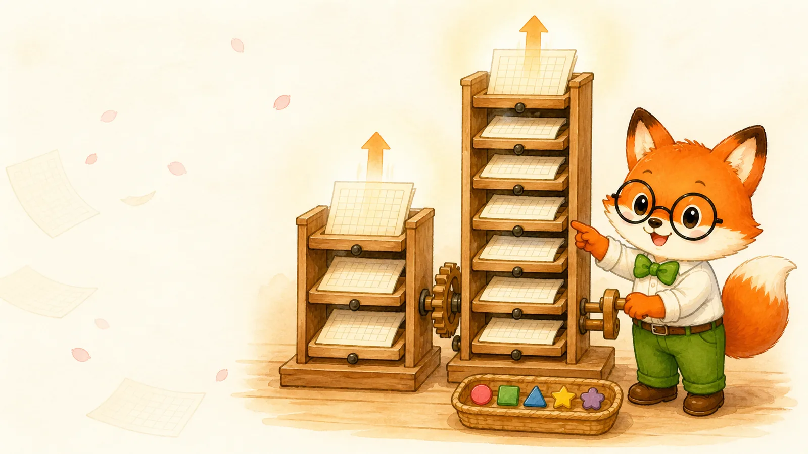
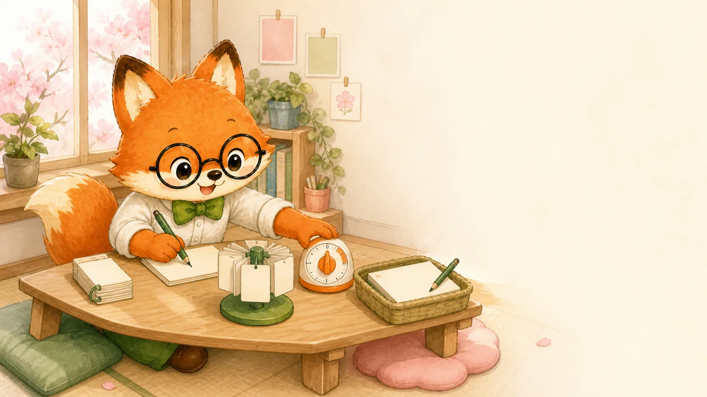
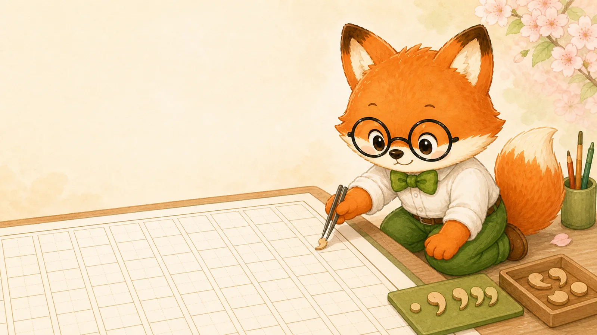
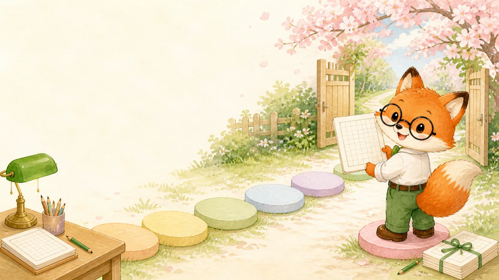
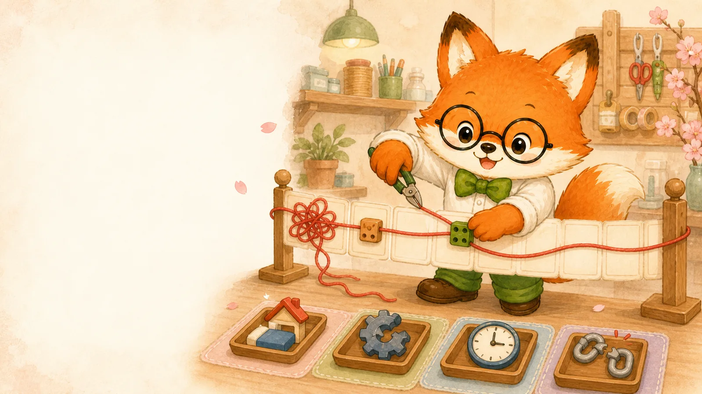

第一章 · 高考日语作文总论
写作文，
先学会写稳
不是堆难词，而是让阅卷老师
完整、准确、轻松地读懂你。
小作文 80–120字大作文 280–320字

01 · 核心定位
一篇稳作文，
先把四个地基放好
02 · 题型定位
同一场考试，
其实是两条赛道
先判断任务，再决定写法写作第一节
80～120字
小作文
- 题干信息全部写入
- 语篇类型判断正确
- 具体场景格式得体
先
定
类
定
类
写作第二节
280～320字
大作文
- 写作要点逐条覆盖
- 段落结构完整清楚
- 语言准确并有层次

03 · 常考话题
题目很多，
素材入口只有三扇门
阿狸提醒 不怕“无话可说”，只怕没有围绕题干写具体。
家门、书与灯、邮箱分别对应个人话题、人文思考和社会场景。
04 · 评分标准
评分不是黑箱：
先定档，再看扣分
05 · 扣分说明
想稳定得分，
先守住五个小地方
相同错误通常不重复扣字数
小作文少于80字、
大作文少于280字
词与书写
用词或书写错误
每处 −0.5语法
活用、时态、助词、句型
每处 −1，上限5分语体
全文保持「です・ます」体
混用会扣分标点格式
累计错误超过3处
最高扣1分多写通常不直接扣分，但冗长会增加出错风险。
扣分项里最值得优先守住的是语体、时态和基础活用，因为它们最容易反复出现。
06 · 日常训练
写作不会突然变好，
要让四种训练轮流发生
- 01从短句起步新词新语法，先写自己的生活
- 02先集中，后交叉熟悉文体，再练快速切换
- 03限时 + 要点练速度，也练局部展开
- 04凡写作必打稿写、查、改，才算一次训练
07 · 写作习惯
考场不用临时聪明，
只要按固定顺序行动
五步形成肌肉记忆定类型
题干与要点决定文体
定分段
大作文通常3–5段
备三件
模板、素材、适配句型
查三处
句号、敬体、首尾段
再誊写
只修小错，不大改结构
高频提醒段首只空一格过去经历用过去时少用语气助词不抄阅读材料不写真实个人信息
五个动作是一条完整顺序，不能跳过前两步直接套模板。

08 · 横写规范
原稿纸不是容器，
它本身就是考点
只空一格
常规作文每段开头空一格；电子邮件通常顶格。
私は毎日、日本語を勉強します。
图中阿狸正在把标点放进格子。点击五类规则，下面的小原稿纸会同步提示。

09 · 考场流程
从读题到誊清，
六步各自挡住一种风险
定类→圈点→分段→打稿→查错→誊清
模板在第四步，不在第一步。
第一步永远是判断任务。

10 · 常见错误
先找病因，
再换表达
点击红色句子，查看修正
11 · 表达优化
所谓“高级”，
是让文章更顺，而不是更难
三种改变足够有感调语序
长内容放在前面，
把「私は」后置。
…のではないかと
私は思います。
接逻辑
让读者知道，
前后句是什么关系。
まだ未解決です。
そのため、…
用中顿
减少重复句尾，
表达更紧凑。
この辺は静かで、
とても綺麗です。
顺序更自然＋逻辑更清楚＋文章更完整
如果一个改动不能改善顺序、逻辑或完整度，就不必为了高级感强行修改。
12 · 考前检查
最后一遍不重写，
只按顺序查六组
点按完成自查阿狸老师总结
把六步带进考场，
作文就不会慌
定类圈点分段打稿查错誊清
先写完整，再写准确；
先守规范，再谈漂亮。
阿狸老师日语课堂 · 教日语的王阿狸
あ阿狸老师日语课堂
点
请按提示完成本页互动0 / 1
01/14